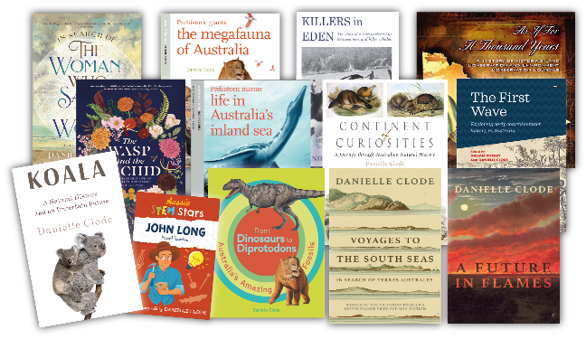

Danielle Clode
| Nature | History | Science |
My love of nature and reading began growing up as an only child on and around boats and the bush on Eyre Peninsula before sailing with my parents around the east coast of Australia. I later studied psychology and politics at university, before returning to the wilds completing a doctorate in zoology on seabirds and feral predators on the Scottish islands of the Outer Hebrides. Ironically, this experience taught me that I was a better writer than a fieldworker and I've has spent the last 30 years working as a freelance writer, editor, researcher and accidental film-maker.
My nonfiction books encompass women in science, natural history, sailing ships, bushfires and animals - living and fossil. Some of them have won the Victorian Premier’s Literary Award and Federation of Australian Writers Awards for non-fiction and Whitley Awards for popular zoology and ecology, as well as being shortlisted for the Children’s Book Council of Australia, Adelaide Festival and National Biography awards. My latest project is due to be published in April 2026, exploring the enigmatic life of echidnas.
